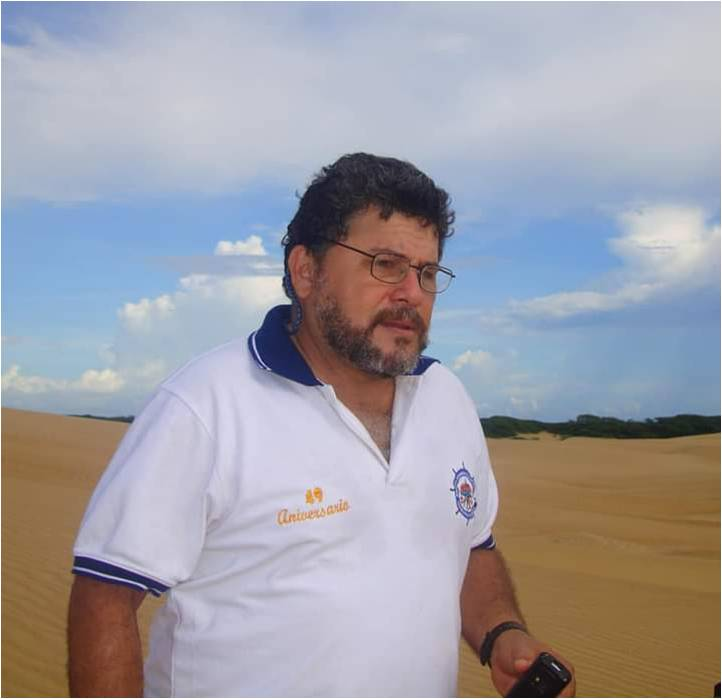
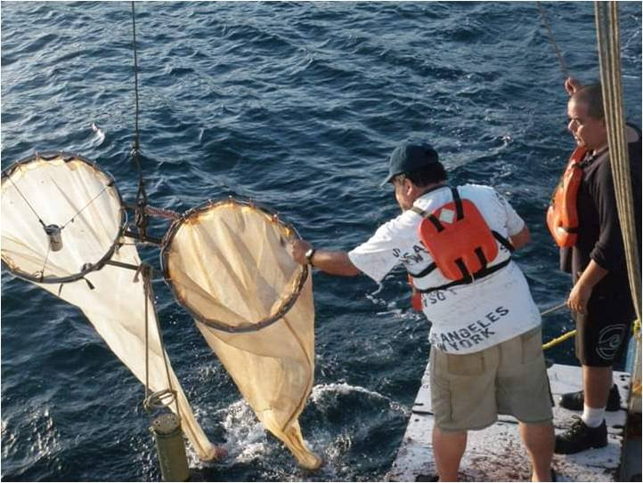
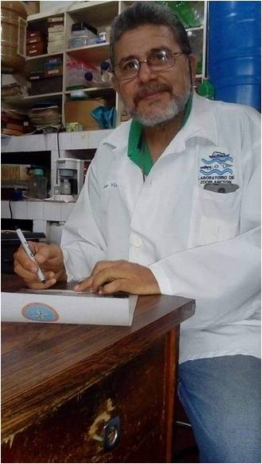
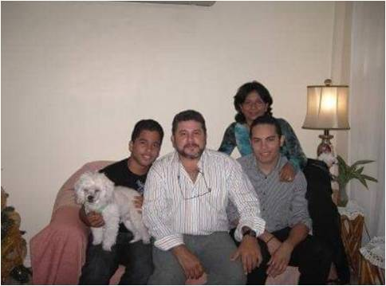
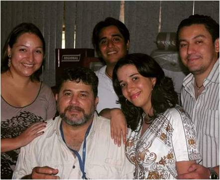

Baumar Marín
“Uno siente la reconfortante sensación de dar cosas útiles que la gente necesita y que has acumulado en toda una vida de esfuerzos y empuje, resumiendo toda tu carrera en un: para esto viví! ... me siento como Salmón desovando, un campesino regando semillas…”

Baumar Marín
Reseña de la vida y obra del Prof. Baumar Marin:
- El profesor Baumar Marín, quien con un inigualable e inagotable don de la enseñanza, y extraordinario ímpetu por el desarrollo de sus investigaciones científicas, ayudó a fortalecer la calidad y distinción del Instituto Oceanográfico de Venezuela-Universidad de Oriente, dejando un legado de conocimientos y un cardumen de alevines, que con certeza contribuirán con las ciencias marinas, cuando fuertes vientos alisios den la oportunidad de resurgir nuestra morada académica. Fue un hombre admirado y respetado, muy amado por su familia, gran amigo y colega, un profesor muy querido por sus estudiantes, a veces un poco iluso o soñador, pero inspirador, compartiendo sus conocimientos, entusiasmo y energías, que parecían no acabar. Lleno de carisma, humildad, amor, sabiduría y pasión por su trabajo, un ser sublime y cercano, padre, amigo, hermano, y maestro.
- El profesor Baumar José Marín Espinoza, nació en Río Caribe, un hermoso pueblo costero situado al oriente de Venezuela, más específicamente en la margen norte de la Península de Paria, estado Sucre, el 14 de noviembre de 1956. Su infancia transcurrió en Caracas capital de Venezuela, donde realizó sus estudios de primaria, posteriormente durante su adolescencia, la familia se establecía nuevamente en el oriente del país, esta vez en la ciudad de Güiria. Allí, Baumar cursó sus estudios del ciclo básico y diversificado, mostrando siempre un gran interés y aptitudes académicas, en este tiempo encontró su primer pasatiempo, al formar parte de un grupo dedicado al entendimiento y desarrollo de películas, tornándose muy interesado por el mundo de la fotografía. Fue en Güiria, su pueblo querido, donde él desarrolló un fascinante amor por el mar, gracias a su padre, un importante Capitán de la Marina Mercante: Diomedes Marín Farías, quien en cada regreso a casa le traía fascinantes estructuras óseas de carbonato de calcio pertenecientes a caracolas. Su imaginación desbordaba y ultrapasaba los confines de la realidad, interesándose desde temprana edad por el buceo; también de manera aficionada y sin nociones, inició colecciones de conchas de bivalvos y caracoles que encontraba en sus días de paseo por la playa. En esa misma época, se hizo fanático de las aventuras de Jacques Cousteau, que veía por televisión, siendo este personaje una gran influencia para él, aprendiendo a tener un mayor respeto por el medio ambiente y particularmente por el mar, todo esto, ciertamente, hizo que su camino estuviera inclinado a prepararse a nivel superior en las ciencias del mar.
- Sus estudios universitarios los realiza en la Licenciatura en Biología, mención: Biología Marina, en el Departamento de Biología. Al avanzar en estos, ya sea por casualidad o causalidad tuvo la oportunidad de trabajar con muestras de zooplancton colectadas a final de la década del 70 por su ídolo, J. Cousteau. Simultáneamente, trabajó como Preparador Docente en las cátedras: Conservación de los Recursos Naturales Renovables, Ecología, y Ornitología. Al poco tiempo llegó a fungir como Asistente Principal de Laboratorio para el Proyecto de Cultivo de Semillas de Bivalvos (CONICIT). Egresa como Licenciado en 1984.
- A partir de 1987, el Profesor Baumar Marín inicia su vida profesional formal dentro del Instituto Oceanográfico de Venezuela, en el Departamento de Biología Marina, como Auxiliar Docente del Laboratorio de Zooplancton, en la especialidad del Ictioplanton. En el año 1989, el Profesor Baumar Marín culmina sus estudios de Postgrado, con la Maestría en Ciencias Marinas, mención: Biología Pesquera, del Postgrado en Ciencias Marinas del Instituto Oceanográfico de Venezuela-Universidad de Oriente (IOV-UDO), donde desarrolló temas relacionados con el desarrollo larval de bivalvos para la elaboración de paquetes tecnológicos para la optimización en la producción de semillas para el avance de la maricultura en Venezuela; fue durante este lapso que participa y gana un concurso por oposición para formar parte de la planta profesoral de la Universidad de Oriente.
- Por su excelencia y compromiso con la academia, fue beneficiario del otorgamiento de becas, convirtiéndose en becario de la Fundación Gran Mariscal de Ayacucho, tanto para el pregrado como para el doctorado, obteniendo una Subvención de trabajo GIROQ-QUEBEC y una Subvención de tesis LASPAU-USA (Doctorado). Esto hizo que se trasladara a principios de la década de los 90, a Quebec en Canadá, para realizar sus estudios Doctorales en la Universidad Laval donde desarrolló como tema de investigación: Transporte y reclutamiento de la lisa, Mugil curema, en una laguna costera tropical. Obteniendo en 1996 el título de Ph.D. en Biología.
- 
- A su regreso a Venezuela, reanuda su función como Docente y retoma sus rutinas de Investigación y Extensión, llegando a participar en más de 35 proyectos de investigación (CINS-UDO y FONACIT) e informes de servicio en el área de Ictioplancton para evaluaciones de línea base para PDVSA, MPPARNR e INSOPESCA. También brinda y asesoraría científica en proyectos de INIA y FIDAE, entre los que se destacan el Proyecto Cariaco, Gran Mariscal, Biodelta, Plataforma Deltana, el proyecto Sardina, Albacora, entre otros; los cuales sirvieron como base científica para el desarrollo de tesis de pregrado, maestría y doctorado de muchos estudiantes, que posteriormente pudieron graduarse desarrollando sus tesis bajo la tutoría del profesor Baumar.
- 
- En sus más de 30 años de esfuerzo y trabajo de investigación dentro de la Universidad, desarrolló temas ligados a las ramas de la Ecología, Zooplancton, Ictioplancton, Acuicultura, Malacofauna, Biología de poblaciones y Pesquerías, permitiendo el progreso y afianzando estas líneas de investigación dentro del Departamento de Biología Marina del IOV-UDO, siendo pionero para el oriente del país en áreas relacionadas con Taxonomía y Ecología de huevos y larvas de peces, Malacoplancton, Micromoluscos, Micronecton, Edad y crecimiento en larvas de peces, Metapoblaciones y Conectividad entre ecosistemas, Tecnología en acuicultura y Desarrollo ontogénico en peces y moluscos. Cabe destacar que el profesor Baumar Marín representó a la Universidad de Oriente en más 200 trabajos de investigación, tanto en congresos nacionales como internacionales entre los años 1980 y 2020. De igual forma, fue participe como autor o co-autor en más de 60 artículos en revistas arbitradas nacionales e internacionales, dejando un número importante de publicaciones en revistas y libros, en alto grado de avance, donde participaba con colegas de su área. El profesor Marín asesoró más de 30 tesis de Pregrado, 15 de Maestría, y 7 tesis de Doctorado. Evidenciándose así una fructífera cosecha de saberes y un gran esfuerzo.
- Dentro de sus competencias docentes, colaboró con el Departamento de Biología de la Escuela de Ciencias (UDO), coordinando y/o dictando las cátedras: Carcinología, Plancton, Biología Marina, Ecología General, Evolución Orgánica, Ictioplancton, Ecología Larvaria de Peces y Malacología. Mientras que en el Postgrado en Ciencias Marinas, también coordinó o fue profesor en los cursos de: Biología de Peces, Biología de Moluscos, Biología Marina, Crucero Oceanográfico, Ecología Marina, Ecología Larvaria de Peces, Ictioplancton, Ecología del zooplancton, Plancton, Procesos Oceanográficos y Biológicos, Seminario de Biología Marina, y Malacología. En el ámbito docente fue uno de los pocos profesores que cada semestre ofertaba sus disciplinas, dándole a un gran número de estudiantes en biología de la UDO-Sucre y del IOV-UDO, la oportunidad de participar en alguno de sus cursos, donde nunca faltaban las galleticas y cafecito agüaito.
- El profesor Baumar nunca aceptó ningún cargo administrativo, salvo ciertas cooperaciones momentáneas cuando fungía como Jefe de Departamento de Biología Marina o como Coordinador Encargado del Programa de Postgrado en Ciencias Marinas del IOV. Su laboratorio era su vida, y las responsabilidades diferentes a lo estrictamente académico lo alejaban de su pasión, razón por la cual, solo existió y fue fuente de sabiduría para sus estudiantes y compañeros de trabajo.
- A pesar de dedicarse a la línea de investigación del Ictioplancton, el profesor Baumar nunca abandonó una de sus pasiones, la Malacología, la cual logró articular en su mundo profesional y desarrollarla paralelamente, es así, como logra destacarse en el campo de la taxonomía de moluscos, llegando a ser una importante figura dentro del reconocido “Grupo de Biología de Moluscos” de la Universidad de Oriente, quienes con arduo esfuerzo y años de colecta y trabajo de campo, lograron publicar el “Catálogo de Moluscos del Oriente Venezolano: Clase Bivalvos”, bibliografía que debería ser referencia en todo trabajo que se realice sobre este tema por los malacólogos venezolanos.
- Entre los premios y reconocimientos alcanzados por el Profesor Marín se encuentran: Premio al reconocimiento académico CONADES 1998, Reconocimiento de la Comisión Permanente del Ambiente y Ordenación Territorial del Senado de la República 1999, Premio de Beneficio Académico (CONABA), Profesor Meritorio nivel III. Premio de Estímulo a la Investigación (PEI). Evaluación 2000-2005. Premio PPI nivel I. 2000-2007, Premio PPI nivel II 2008-2017. SAI-UDO 2014. Reconocimiento por la Comisión Oceanológica Intergubernamental (COI) de la UNESCO, donde le fue otorgada la medalla Roger Revelle, el 10 de julio de 2014, en París, esto por los estudios relacionados con el cambio climático, llevados a cabo por el “Proyecto Cariaco: Ventana a la Oceanografía en Venezuela”, evento que fue presentado durante la conferencia en conmemoración del científico Roger Revelle, en el marco de las actividades de la 47° Sesión del Consejo Ejecutivo de la COI.
- Toda esta labor como Docente permitió que el profesor Marín fuese avanzando profesionalmente y alcanzase en el año 2016 el máximo nivel dentro del escalafón profesoral de la Universidad de Oriente: Profesor Titular, mostrando una importante contribución en el desarrollo del estudio del Ictioplancton, que aportaban descripciones precisas de las abundancias y distribuciones espacio-temporales de especies de interés comercial y ecológico a lo largo de las costas del nororiente de Venezuela.
- En referencia a algunos aspectos de su vida personal, el profesor Marín formó parte de una maravillosa familia, encabezada por su señora madre Doña Baudilia Espinoza de Marín “Yiya”, quien cumplía una hermosa labor social como enfermera. El particular nombre “Baumar” proviene precisamente de la mezcla entre el nombre de su madre Baudilia y el de su bisabuela paterna, Marcelina. Durante su vida vivió rodeado y querido de una familia grande, donde fue admirado por sus hermanos y en especial por sus sobrinos. En 1991, Baumar contrajo matrimonio con la Profesora en Química Iray Fornerino, su amada esposa, de allí surgieron sus dos amados hijos: León y Jean Carlos, de los que estaba muy orgulloso y a los que nombraba constantemente. Baumar tuvo tres hermanos, siendo los más conocidos por sus cercanías al mundo de las ciencias, Rita y Gedio Marín, la primera una importante y reconocida Ambientalista y el segundo un Ornitólogo con mucha experiencia y trayectoria, también Profesor de la UDO. Es importante resaltar que este grupo familiar, constituyó para mediados del 2007, una fundación dedicada al rescate de los valores y amor por la naturaleza, orientado principalmente para instruir a las generaciones más jóvenes en el compromiso que debían cumplir en el cuidado, mantenimiento, rescate y preservación del entorno natural, esta se llamó La Fundación Pequeños Guardianes del Medio Ambiente, cuya área de influencia se enfoca en los estados Anzoátegui y Sucre.
- 
- Para sus colegas y amigos, el profesor Baumar Marín era una persona especial, extraordinaria, confiable, empático y solidario, le gustaba ayudar a todos, siempre tenía disposición y una actitud positiva ante el trabajo y los retos que se presentaban. Fue muy colaborador con todos sus amigos, compañeros, y muy especialmente con los estudiantes, así como con todas las personas que llegaban al Departamento de Biología Marina. El profesor Baumar, era una enciclopedia andante, sabía de todo y lo que no sabía lo investigaba; se apasionaba por temas en auge y hacía planes para experimentarlos, siempre dentro de las posibilidades de su laboratorio. Era un hombre calmo, aunque con un carácter fuerte, que siempre evitó la confrontación, mostrándose equilibrado e imparcial, siempre mediador y conciliador.
- Era absolutamente apasionado con el trabajo de campo, participaba activamente en toda colecta de material biológico que se necesitara, tanto a IDEA en Mochima, como al Centro de Investigaciones Ecológicas de Guayacán, la playa Tunantal y en especial a su muy querida Estación Hidrobiológica Dr. Aníbal Vélez en Turpialito, a esta última -incluso durante la pandemia- iba cada 15 días a realizar los muestreos de su proyecto. Comentan algunos amigos cercanos, que cada vez que van a la estación, parecen verlo halando la malla de plancton desde el muelle... en este trabajo estaba muy contento con los resultados que iba obteniendo, ya que llevaba una serie de tiempo de más de 5 años con el proyecto, decía que era un excelente trabajo que contenía importantes datos quincenales de temperatura, salinidad, y zooplancton. Vale añadir que en una oportunidad, tras un accidente en una salida a Mochima, tuvo que tomar un descanso obligatorio, y en un e-mail nos regaló las siguientes líneas:
“...el ánimo se me resquiebra de tiempo en tiempo pero la ilusión de volver al mar, oír sus voces, y seguir produciendo para nuestra universidad hacen ver esto como una lección de vida que Dios me dio, como para decirme que debo entregar día a día lo mejor de mí, porque uno no sabe cuánto nos queda, y peor aún....cuando nos quedaremos sin nada que dar. Sigo preparando los trabajos y avanzando sin caminar :-) … un abrazo a todos”... Baumar.
- El profesor Baumar era un intenso coleccionista de casi todo: recetas de cocina (era un amante de la cocina y de la comida); constantemente estaba repartiendo CD’s con más de 2000 recetas. Recopilaba constantemente infinidad de información científica para armar carpetas y compartir con estudiantes y colegas. También coleccionaba potecitos, para sus muestras, muchísimas veces su laboratorio desbordaba con ellos hasta los pasillos, ganando algún que otro llamado de atención. Aficionado de la música, en particular del rock, de la mano de Pink Floyd “Shine on you crazy diamond, Come on you stranger, you legend, you martyr, and Shine!”. El profesor Baumar tenía un particular silbido que con entonadas melodías relativamente armoniosas, nos anunciaba su presencia en los pasillos o su acercamiento a un lugar en particular, fueron muy pocas las veces que ese sonido no se escuchó.
- Las anécdotas con él fueron incontables, sería imposible mencionarlas todas, cuando llevaba a los estudiantes nuevos por vez primera a Turpialito les decía que había una planta que podía sustituir el azúcar y que era muy buena, se bajaba del vehículo buscaba la planta y se las daba, y siempre todos caían en esa broma, esa planta tenía un sabor entre amargo y agrio, él solo se reía.
- Era muy común para los estudiantes y compañeros de trabajo que hacíamos vida en el Departamento de Biología Marina del IOV, encontrarnos abandonados en el pasillo: un teléfono celular, una cartera, un morral, una laptop o una taza de café a medio tomar, junto con una libretita o ficha de papel llena de apuntes escritos con emoción sobre nuevos ideas de investigación, fechas de reuniones o compromisos que no debían ser olvidadas, o nombres de canciones de grupos musicales de décadas pasadas. No teníamos que pensarlo dos veces, para saber que habían sido dejados olvidados en el pasillo por el Prof. Baumar, quien tenía terrible memoria para aspectos de la vida cotidiana. Sin embargo, bastaba con hacerle una pregunta sobre ciencias marinas para que recordara con exactitud el nombre de la publicación, autores, año y a veces hasta la página exacta dónde conseguir la respuesta. Ese era nuestro profe, un maestro de la memoria selectiva dirigida a lo que más apasionaba de las ciencias... investigar y compartir sus conocimientos con quienes siempre buscamos aprender de él.
- El profesor Baumar vivió y lucho a diario durante la destrucción de la infraestructura del Instituto Oceanográfico de Venezuela y del Núcleo de Sucre de la Universidad de Oriente, entre 2018 y 2020. Aún ante este escenario, continuaba trabajando con ahínco y con mucha Fe, en que la situación mejoraría. Siguió sus labores en espacios improvisados de laboratorios y aulas, y desarrollando a pesar de las circunstancias trabajos de grado, siempre con sus queridos estudiantes. Encabezó además, junto a la Directora del IOV, Dra. Mayré Jiménez, múltiples jornadas de rescate y protección de los libros de nuestras violentadas bibliotecas.
- “…tesistas y profesores que colaboran en el proceso, bajo un arduo esfuerzo que bien merece un eterno agradecimiento a estas personas que saben que este proceso se hace con la conciencia de que los conocimientos que levantamos en cada libro son para ayudar a superar la barbarie y la ignorancia que nos amenaza y que puede matar más personas que la Pandemia que nos agobia. A este cada vez más reducido grupo de colaboradores internos y externos, nuestro más sincero reconocimiento del valor ético y moral que los motiva y los llena, y que ha evitado que caigan en la apatía y la depresión derrotista que inmoviliza a gran parte de nuestros profesionales udistas.... fuerza hermanos ...” Baumar (21 nov 2020).
- Este es un pequeño y sentido homenaje en su memoria, los que lo conocimos lo quisimos y admiramos, y los que te conocerán por medio de este escrito, entenderán porque tanto amor, y posiblemente llegaran a sentir tu ausencia, en todo caso ya eres inmortal en nuestros corazones, en nuestras conciencias, que te hacemos un ser perfecto, nos formaste a muchos dentro de la Universidad, para cubrir campos en otras universidades o para desarrollar proyectos de investigación para la evolución de las Instituciones del Estado, tu conocimiento no acaba, se preserva, se desarrolla y evoluciona en quienes dejaste en esta Tierra para que continuemos tu legado.
- Terminamos este relato con lágrimas en los ojos, el corazón chiquito y un fuerte nudo en la garganta, sólo podemos agradecer a la vida por habernos permitido conocer a este ser lleno de luz, trabajar con él y soñar con él, en sus proyectos que parecían inalcanzables por la falta de límites, una vez más nos demostró que los limites los poníamos nosotros, porque siempre los proyectos salían adelante y los resultados eran sorprendentes, esos proyectos aún no acaban, continuamos en varios de ellos, y sólo terminarán cuando queden completamente concluidos, como la asignatura que nos dejó pendiente.
- 
- El profesor, Baumar Marín, falleció en la cuidad de Cumaná el 11 de abril de 2021, a sus 64 años de edad, tras complicaciones respiratorias, convirtiéndose en una de las tantas víctimas producto de la Pandemia mundial de Covid-19, su partida dejó un inmenso vacío en su familia y en quienes lo conocimos, quienes no olvidaremos ese “caracha negro”… De parte de sus amigos/colegas más allegados y del personal académico, administrativo, obrero y estudiantil del Instituto Oceanográfico de Venezuela ofrecemos nuestra gratitud con su familia, y le brindamos nuestras más sinceras palabras de aliento, hermandad y paz. Para su esposa, hijos, hermanos y familiares reciban nuestro más sentido pésame, y que brille para él la luz perpetua.
- “Santa como todos los años pasó por frente la UDO,...recordó de años pasados sus floridos jardines e investigadores inagotables y dedicados.... y se preguntó: qué sería de esta gente sin días de descanso y sacrificio de por vida, que laboran sin pedir reconocimientos y con el convencimiento de estar aportando todo su esfuerzo por el bien de la naturaleza y la humanidad?. A lo lejos se fijó que en sus edificios había luces prendidas y sonidos de tubos de ensayos y sillas... se sorprendió que aún había gente que trabajaba duro en tiempos de condiciones de austeridad, desánimo e inseguridad. Ya para salir de Cumaná, luego de repartir sus regalos, no se olvidó de pasar por el laboratorio 114 y encontró un pequeño arbolito... abrió su saco...y nos dejó:
...un inmensurable sentimiento de amistad por los colegas y adjuntos,
...una incontrolable pasión por el trabajo y
...una imborrable esperanza de que la UDO volverá a florecer...” Baumar.
Puedes leer y descargar este articulo en la pagina oficial del Boletin Oceanografico de Venezuela, en el boletin en tributo al Profesor Marin Boletin IOV
Núñez-Peñalver, José Gregorio & Ariza-Arredondo, Luis Alejandro